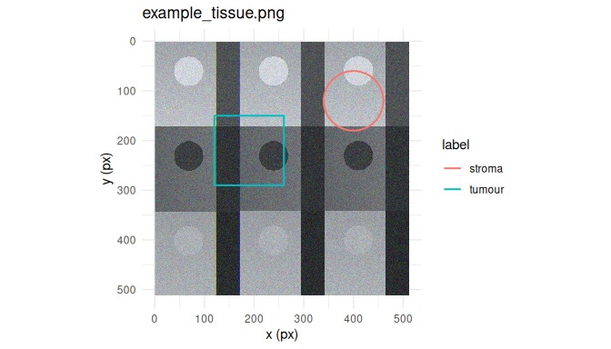

annotatR provides multi-layer region-of-interest (ROI) annotation for whole-slide microscopy images, hyperspectral data cubes, and conventional rasters. Annotations are validated simple-feature geometries stored in image pixel coordinates with explicit pyramid-level transforms, and rasterise to binary, labelled, or multi-class integer masks for downstream segmentation and classification. A batch annotation application supports resumable sessions across image queues, live mask preview, and export to GeoJSON, QuPath, and TIFF.
Installation
# install.packages("pak")
pak::pak("CTTIR/annotatR")Quick start
library(annotatR)
# Read a bundled example image and build a project with one annotation layer.
img <- at_example_image("tissue")
proj <- at_project(img, at_layer("regions", labels = c("tumour", "stroma")))
# Add regions of interest.
proj <- proj |>
at_add_roi("regions", at_roi_rect(120, 150, 260, 290, label = "tumour")) |>
at_add_roi("regions", at_roi_circle(400, 120, 60, label = "stroma"))
at_rois(proj)[, c("roi_id", "label", "area_px")]
#> # A tibble: 2 × 3
#> roi_id label area_px
#> <chr> <chr> <dbl>
#> 1 roi_000000001 tumour 19600
#> 2 roi_000000002 stroma 11292.
# Rasterise to a labelled mask (the "Schablone") and write it with a legend.
mask <- at_mask(proj, type = "labelled")
path <- tempfile(fileext = ".tif")
at_write_mask(mask, path) # also writes <path>.legend.json
at_plot_overlay(proj)
Supported formats
| Format | Backend | Package required | Pyramid | Spectral |
|---|---|---|---|---|
| PNG / JPEG / TIFF | raster |
magick or tiff | no | no |
| Pyramidal / OME-TIFF | tiff |
tiff | yes | multiplex |
| qptiff, OME-TIFF | ometiff |
RBioFormats | yes | multiplex |
Cubert .cu3
|
cuvis |
cuvis.r | no | yes |
| ENVI cube | envi |
base R | no | yes |
| Diaspective Vision Tivita | tivita |
base R (ENVI) | no | yes |
The mask workflow
A mask is the central output artifact: a binary, labelled, or multi-class integer raster derived from your annotations, exportable at any pyramid level and self-describing via a sidecar JSON legend. Masks feed segmentation, classification, and spectral-extraction pipelines in Python, ImageJ, QuPath, or R. See vignette("masks") for the pixel-coverage contract and downstream consumption.
The annotation app
# Launch the batch annotation app over a queue of images:
at_annotate(at_example_session(5))Iterate through an image queue, draw multi-layer ROIs, watch the mask render live, and export everything in one pass — with resumable sessions and keyboard-first throughput.
Related work
Unlike QuPath, the ImageJ ROI Manager, napari, or Annotorious, annotatR is R-native and script-first, handles hyperspectral cubes alongside microscopy, and treats the batch mask export as a first-class, reproducible artifact.
Acknowledgements
annotatR builds on OpenSeadragon, Annotorious, and the sf and stars packages.
Use of LLM tools
Portions of this package were prepared with assistance from large language model tooling for narrowly defined, non-authorial tasks: copyediting, prose smoothing, Markdown/LaTeX formatting, scaffolding of boilerplate files (CI configs, build scripts), code refactoring. The tools used were Chat AI, the LLM service of KISSKI (GWDG), and a self-hosted Mistral Small (24B, Apache-2.0) run locally via Ollama and the ollamar R package — local inference only, with no data sent to third parties for the self-hosted model.
Citation
If you use this software, please cite it as:
Heller, R. (2026). annotatR: Multi-layer region-of-interest annotation for images and spectral cubes (Version 0.1.0) [Computer software]. Zenodo. https://doi.org/10.5281/zenodo.21889921